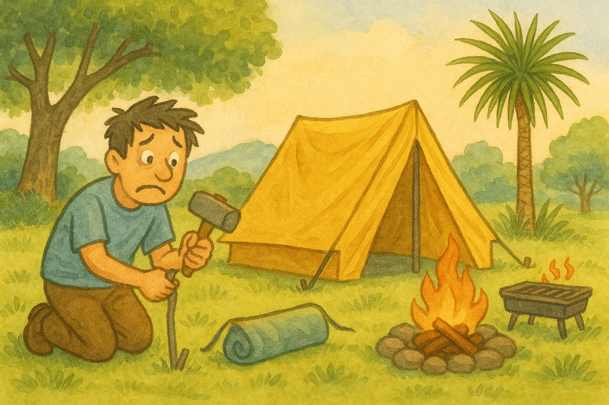

Camping Guide
For beginner campers seeking helpful guidance, please refer to this article.
It's designed to enhance your camping knowledge and lead to more enjoyable trips
Please select your camping type.
a. Spray mosquito repellent as soon as you arrive at the campsite to avoid bites.
b. Always check the instructions before setting up your shelter or tent; it will save you time.
c. Set up trash bags. You'll generate more waste than you think while setting up, so having bags ready adds convenience.
a. Choose a flat spot, avoiding inclines or declines as much as possible. This makes for a more comfortable setup and sleep.
b. Choose for a shady spot, ideally surrounded by trees. Trees offer natural protection from the sun and can help block wind.
c. Pick a location that's not too far from, nor too close to, restrooms and trash cans. You want convenience without the noise or odors.
It's perfectly fine to enjoy camping in the rain, but you should avoid camping on windy days.
Wile potentially dampening, can actually be quite cozy for camping. With the right gear—a good waterproof tent, rain fly, and proper waterproof clothing— you can stay dry and comfortable. The sound of rain on your tent can even be quite relaxing, and it often means fewer bugs. You can still enjoy activities like reading, playing games, or simply relaxing inside your shelter.
Irenna86. (n.d.). Autumn season camp picnic [Illustration]. Pixabay.
https://pixabay.com/illustrations/autumn-season-camp-picnic-5580632/
Irenna86. (n.d.). Camping forest winter snowing snow [Illustration]. Pixabay.
https://pixabay.com/illustrations/camping-forest-winter-snowing-snow-5887682/
Irenna86. (n.d.). Windy umbrella girl wind child [Vector image]. Pixabay.
https://pixabay.com/vectors/windy-umbrella-girl-wind-child-5940755/
OpenAI. (2025). Beginner camper struggling to set up a tent [AI-generated illustration]. DALL·E.
https://chat.openai.com/